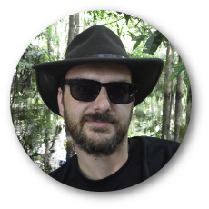

Group Lead
Jon Hill
Jon solves large-scale environmental problems using computational fluid dynamics and other software models. He have a diverse research background that spans ocean biogeochemistry, sedimentary modelling, biogeography, hazards and tidal dynamics. His primary focus is in palaeo-tsunamis and palaeo-tides at the moment. You can find out more on his personal website.
Staff
Tom Chapman
Tom is a Research Software Engineer who is refactoring a legacy stratigraphic forward model code, Carb3D. This project is in collaboration with University of Bristol.
Masters students
Katie Lee
Katie will be creating tidal models of the Great Barrier Reef in the past and present day.
Eleanor Mawson

Eleanor will be using the latest numeric techniques to do ultra-high reoslution tidal models on the Great Barrier Reef.
Kieran Wilkinson
Kieran is carrying out a project on how submarine landslide parameters effect the wave generated.
Amy Rhodes
Amy is examining the environmental impact of tidal energy in the UK.
Undergraduate students
Tom Austin
Tom is examining regional environmental os tidal turbines in the North Sea.
Phil Cowing
Phil is comparing impacts of tidal energy in the UK to climate change driven changes.
Emma Lowe
Emma is modelling the effectiveness of leaky wooden dam in West Yorkshire.
Amy McIntyre
Amy's project is around how water depth and slope effects tsunami generation from submarine slides.
Rebecca Berry
Rebecca is looking at the impact of tsunami hydrodynamics from multi-source generation.
Jacob Thomas
Jacob is using idealised modelling to tease apart submarine landslide parameters and thier impact on wave generation.
Eleanor Williams
Eleanor is looking at public perceptions of tidal energy and the environmental impacts.